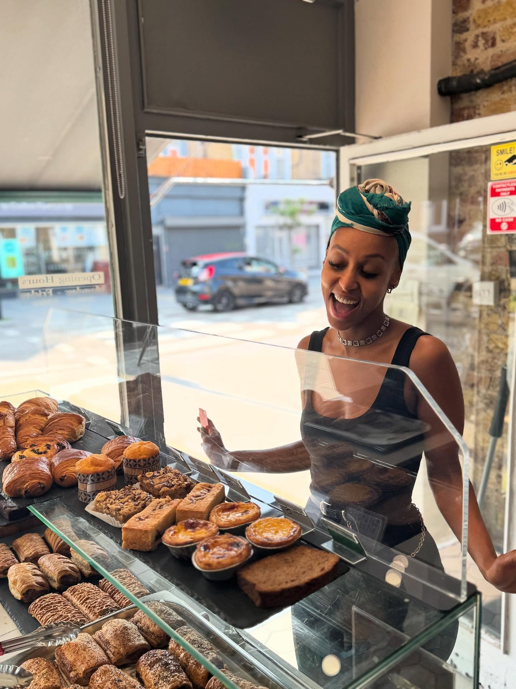
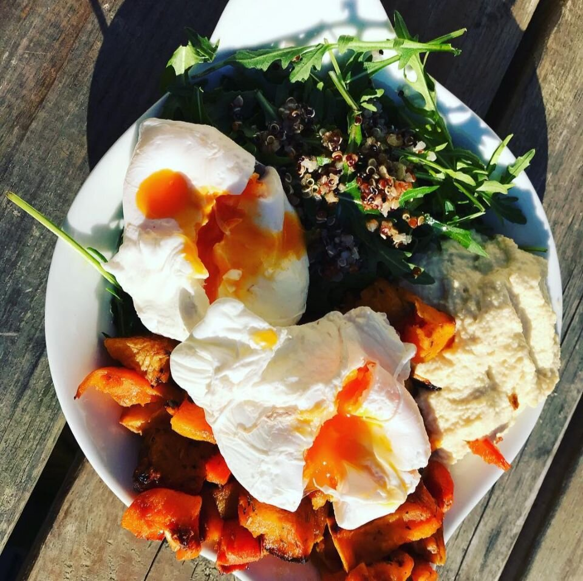
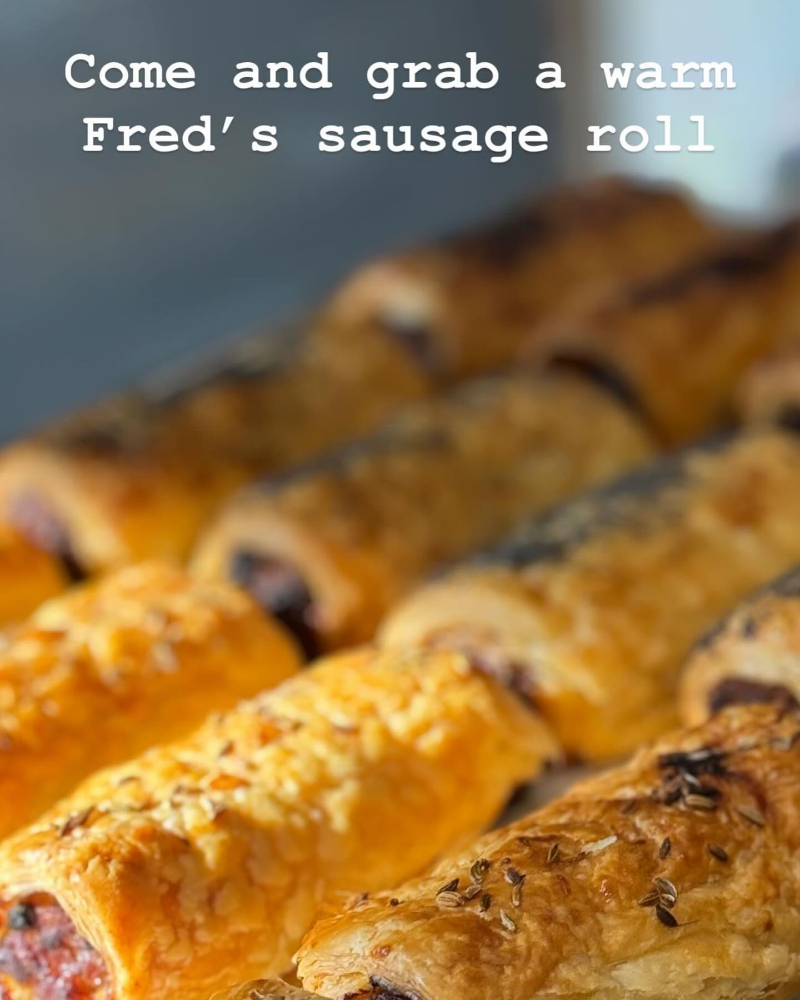

Coffee & matcha
Flat whites, iced lattes, fresh juice, and matcha whisked to order.
A community cafe on Brockley Road — coffee, cake, garden patio, and neighbourhood gatherings.
Community cafe · SE4
Fred's is a family-friendly spot opposite Crofton Park station. We pour Allpress coffee and Good & Proper matcha, bake in-house, and keep a garden patio open for regulars, remote workers, and weekend lingerers. Free Wi‑Fi, friendly baristas, and room for community.

On the counter
Allpress pours, Good & Proper matcha, flatbreads, salads, and the sausage roll regulars swear by.
Flat whites, iced lattes, fresh juice, and matcha whisked to order.

Poached eggs, roasted veg bowls, flatbread sandwiches and fresh salads.

Warm Fred's sausage rolls, homemade cakes, croissants and vegan bakes.
Community board
Garden brunches, family mornings, tastings, and open mics — pull up a chair or host your own gathering with us.
Want to run a workshop, book club, or birthday brunch?
Message @fredslondon@fredslondon
Find us
Opposite Crofton Park station — grab-and-go for the train, or a slow sit in the garden.
| Monday – Friday | 8:00 – 16:00 |
| Saturday – Sunday | 8:30 – 16:00 |